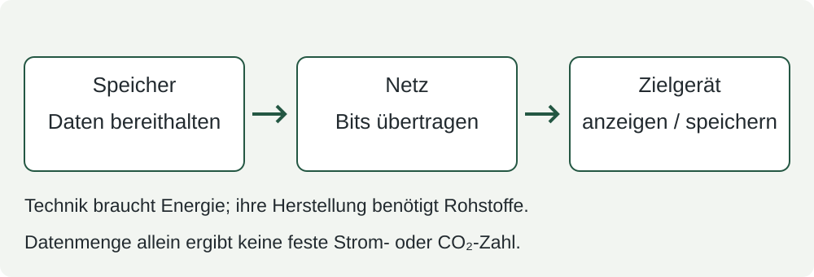

DAT-5 · So klein wie sinnvoll?
30 Minuten · eigene Entscheidung mit Gegenprüfung
Für einen fiktiven schulischen Leihplan soll ein kleines Schlüsselzeichen übertragen werden. Der Plan zeigt damit: Hier kannst du einen Schlüssel ausleihen. Entscheide, welche Bilddaten für diesen Zweck ausreichen.
1 · Erst den Zweck klären · 5 Minuten

A hat 4×4 Pixel, B hat 8×8 Pixel. Beide verwenden ein Bit je Pixel. Es sind nach derselben Mittelpunktregel erzeugte Versionen derselben Vorlage, hier vergrößert dargestellt. Das ist ein Modell, keine gemessene Lesbarkeitsstudie.
Sage zuerst: Welches Detail hilft dir zu erkennen, dass es ein Schlüssel sein soll? Prüfe es anschließend in beiden Bildern.
2 · Daten haben einen Weg · 5 Minuten

Unser Modell: Bei gleichem Format, gleicher Zahl von Kopien und gleicher Nutzung bedeuten mehr Bits mehr zu speichernde und zu übertragende Daten. Geräte, Netze und Speicher benötigen Energie; ihre Herstellung benötigt Rohstoffe. Der tatsächliche Energiebedarf hängt aber auch von Technik, Betrieb und Nutzung ab. Viermal so viele Nutzdaten bedeuten deshalb nicht automatisch viermal so viel Strom.
Rechnet gemeinsam A in Bits und Byte um. Sagt, was sich beim Wechsel zu B in der Rechnung ändert. Eine CO₂-Zahl könnt ihr aus diesen Angaben nicht bestimmen.
3 · Deine Entscheidung für den Leihplan · 10 Minuten
Formuliere eine Empfehlung in drei bis fünf Sätzen, mit Rechnung oder kurzen Stichpunkten daneben:
- Wähle A oder B. Nenne ein sichtbares Detail als Beleg dafür, ob das Bild seinen Zweck erfüllt. Wenn du keine Variante ausreichend findest, begründe eine Änderung.
- Berechne die Nutzdatenmenge beider Bilder in Bit und Byte. Vergleiche sie als Verhältnis.
- Verbinde deine Wahl mit Übertragung und Speicherung. Benenne, was du über den Ressourcenbedarf sagen kannst und was du ohne weitere Angaben nicht weißt.
Hilfe: Eine Abwägung formulieren
„Für … wähle ich … . An … erkenne ich … . Gegenüber … müssen … Bits übertragen und gespeichert werden. Das ist sinnvoll, weil … . Den genauen Strombedarf kann ich daraus nicht … .“ Mehrere Entscheidungen sind möglich, wenn Zweck, Bildbeleg und Rechnung zusammenpassen.
4 · Gegenprobe und Revision · 10 Minuten
Eine andere Person prüft deine Empfehlung: Ist das Bilddetail tatsächlich sichtbar? Stimmen Menge und Zweck zusammen? Sie stellt eine konkrete Rückfrage. Du ergänzt oder korrigierst deine Begründung. Falls ihr nicht übereinstimmt, bleibt der strittige Punkt sichtbar; die Lehrperson hilft bei der Klärung.
Neuer Zweck – allein entscheiden: Nun soll ein Bild helfen, zwei sehr ähnliche Schlüssel an kleinen Unterschieden ihrer Zähne auseinanderzuhalten. Reicht die gerade gewählte Variante dafür? Begründe, was du genauer sehen oder prüfen müsstest. Du darfst zu dem Schluss kommen, dass keine der beiden Modellvarianten den neuen Zweck zuverlässig erfüllt.
Festhalten: Eine kleine Datenmenge ist sinnvoll, wenn die benötigten Informationen erhalten bleiben. Mehr Pixel können Details erhalten; sie garantieren nicht für jeden Zweck ausreichende Qualität. Vergrößern allein gewinnt verlorene Details nicht zurück. Deine Entscheidung braucht Zweck, Beleg, Datenrechnung und eine Grenze ihrer Aussage. Die gemeinsame Sicherung bündelt das Ergebnis.